第2章 ゼロから作る量子コンピューター
76 回生 Chito
2.1 はじめに
76回の Chitoです。いつの間にか高2になってしまい焦っています。普段は、PythonやC++を使ったり、Linuxで遊んだりしています。最近、量子コンピューターについて興味を持ち始めたので、今回は、量子コンピューターの計算の仕組みをPython3でシミュレートしてみながら量子コンピューターの計算方法を自分の分かる範囲で紹介してみようと思います。
2.2 量子コンピューターとは
まず、量子とは「粒子と波の性質をあわせ持った、とても小さな、物質やエネルギー単位のこと」*1で量子力学の法則に従っています。そして、量子の物理状態を利用したコンピューターを「量子コンピューター」といいます。
2.3 コンピューターの種類
量子コンピューターに対して、普段私たちが使っているコンピューターを「古典コンピューター」といいます。さらに、任意の量子状態から任意の量子状態へと十分に高い精度で変換できるかとうかという「万能性 (エラー耐性)」、計算能力が古典コンピューターよりも上回っているかという「量子の優位性」、量子特有の物理状態を使用して計算を行うかどうかという「量子特有の物理状態」の3つの特徴の有無によって次のように分類できます。以降、特に注釈のない限り量子コンピューターは「万能量子コンピューター」を指すものとします。
2.4 量子ビット
量子ビットと古典ビット
まず、古典コンピューターと量子コンピューターの大きな違いは、コンピューターで扱う最小単位の「ビット」の仕組みにあります。古典コンピューターで扱うビット(いわゆるビット)は1ビットにつき「0」又は「1」のどちらかの状態しか持つことができないが、量子コンピューターで扱うビット(これをqbitという)は1ビットに「0」と「1」の両方の状態を確率的に「重ね合わせ」て持つことができ、量子状態を「測定」した時に初めて「0」か「1」かが決まります。この「重ね合わせ」の性質によって、量子コンピューターは古典コンピューターと異なり一度に複数の数の状態を保持できるので、桁違いに高速な計算が可能となることもあります。ただ、数値が確率的に存在するという量子コンピューター特有の性質により、得られる結果もまた、確定的なものではなく確率的なものとなってしまいます。
2.5 量子ビットの表し方
量子の状態は私たちには見ることができませんが、目に見えない量子の状態を視覚的、数学的に分かりやすくした表記方法があり、代表的なものに「ブロッホ球」と「ブラケット記法」というものがあります。では、それぞれ順番に紹介していきます。
ブロッホ球
ブロッホ球とは、1量子ビットを視覚的にわかりやすく図示したものです。球面上の矢印のさす場所が量子ビットの状態を表し、矢印が真上を指すとき「0」、真下を指すとき「1」を表します。ただ、複数量子ビットになるとその分ブロッホ球をたくさん描かないといけないのでかえって見づらくなります。
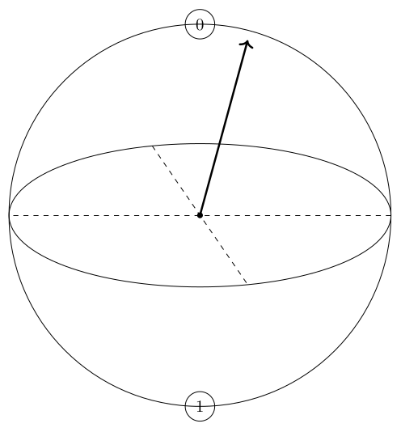
図2.1:
ブラケット記法
ブロッホ球の他に、量子ビットを表す際に「ブラケット記法」がよく使われます。ブラケット記法とは、量子の状態をベクトルを用いて表記する記法です。こうすることで、ベクトル同士の演算を見やすく表現することができ、ブロッホ球とは異なり複数ビットの場合でも分かりやすく表記することができます。また、1量子ビットの重ね合わせの状態\( \ket{\psi} \)をブラケット記法で表記すると下の様になります。
\( \alpha \)、\( \beta \)を複素確率振幅と言い、\( |\alpha|^2 \)、\( |\beta|^2 \)はそれぞれ測定した時に、「0」を示す確率、「1」を示す確率を表しています。
多量子ビット
多量子ビットの場合も基本的には1量子ビットの場合と同じです。例えば、3量子ビットで1、2、3番目の量子ビットがそれぞれ\( \ket{0} \)、\( \ket{1} \)、\( \ket{0} \)と確定している時、\( \ket{0} \)\( \ket{1} \)\( \ket{0} \)と表すことができます。また、これを\( \ket{010} \)と省略することがよくあります。1量子ビットの時と同じように3量子ビットを数式で表すと下のようになります。
2.6 量子ビットをPythonで
1量子ビット
二度目ですが、1量子ビット\( \ket{\psi} \)は次のように表せます。
従って、\( (|\alpha|^2+|\beta|^2 = 1,\, \alpha,\beta \in \mathbb{C}) \)を満たす\( \alpha \)、\( \beta \)が見つかると1量子ビットが表現できそうです。
\( (|\alpha|^2+|\beta|^2 = 1,\, \alpha,\beta \in \mathbb{C}) \)を満たす\( \alpha \)、\( \beta \)の作り方の一例として、まず、\( A^2+B^2=1 \)を満たす0以上の実数\( A \)、\( B \)の組を求め、その後、\( |\alpha| = A \)、\( |\beta| = B \)となる複素数\( \alpha \)、\( \beta \)を求める方法があります。
前半の\( A^2+B^2=1 \)を満たす0以上の実数\( A \)、\( B \)の組を求める方法ですが、筆者の思いついた方法で3つほどあるので紹介します。
- その1
- 1つ目は、0以上1以下の乱数*3を1つ作り、もう片方は1からその数を引いたものとして、それぞれの平方根をとるという面白味もなく一番安直な方法。
- その2
- 2つ目は、「合計に対するその数が占める割合」を求め、それぞれの平方根をとる方法です。例えば、100点満点の数学と国語のテストを受け、数学が75点、国語が85点取ったとします。この時、合計得点に対する数学の点数の割合は\( \frac{75}{75+85} = 0.46875 \)、\( \frac{85}{75+85} = 0.53125 \)となります。\( A = \sqrt{0.46875} \)、\( A = \sqrt{0.53125} \) とおくと、\( A^2+B^2=1,(0 \leqq A \leqq 1, 0 \leqq B \leqq 1, A, B \in \mathbb{R}) \)を満たし、適します。一般的に変数\( a \)、\( b \)を乱数として、\( A = \sqrt{\frac{a}{a+b}} \)、\( B = \sqrt{\frac{a}{a+b}} \)によって\( A \)、\( B \)を決めます。すると、\( A^2+B^2=1,(0 \leqq A \leqq 1, 0 \leqq B \leqq 1, A, B \in \mathbb{R}) \)を満たし、適します。Pythonで書くと「リスト2.1」のようになります。この方法は量子ビットのビット数が増えてもほとんど同じプログラムで書けるので、今回はこの方法を採用します。
- その3
- 3つ目は、三角関数を利用する方法です。\( \theta\in\mathbb{R} \)の範囲で\( \sin^2\theta + \cos^2\theta = 1 \)は常に成り立つので、\( A = |\sin\theta| \)、\( |\cos\theta| \)とおくと、\( A^2+B^2=1 \)が成り立ち、\( 0 \leqq A \leqq 1, 0 \leqq B \leqq 1, A, B \in \mathbb{R} \)を満たします。この方法は、面白いですが一見すると分かりにくい上に量子ビットが増えた時に応用がきかないので今回は使いません。
リスト2.1:
import numpy as np if __name__=="__main__": gen = np.random.default_rng() # 乱数生成機 a = gen.random() b = 1 - a A = np.sqrt(a) B = np.sqrt(b) print(f"A = {A},B = {B}") print(f"A^2+B^2={A**2 + B**2}")
リスト2.2: monobitQubit.py
import numpy as np gen = np.random.default_rng() # ランダムな複素数の組を生成 def generate_random_complex(norm): size = len(norm) rotate = gen.random(size) * 2 * np.pi return norm * (np.cos(rotate) + 1j * np.sin(rotate)) class MonoQubit: def __init__(self): self.__probability_complex_amplitude = np.array([]) self.__roulette_table = np.array([]) self.__set() def __generate(self): bit = 1 prob_num = np.power(2,bit) absset = gen.random(prob_num) norm = np.array(np.sqrt(absset/np.sum(absset)),dtype=complex) return generate_random_complex(norm) def __set(self): self.__probability_complex_amplitude = self.__generate() self.__roulette_table = np.cumsum(np.abs(self.__probability_complex_amplitude)) # 観測 def observe(self): if gen.random() > self.__roulette_table[0]: return 1 else: return 0 if __name__ == "__main__": QB = MonoQubit() for i in range(10000): print(QB.observe(),end=",")
さて、1量子ビットを作ることができました。1量子ビットを表すオブジェクトを「MonoQubit」クラス、1量子ビットの確率複素振幅を「MonoQubit」クラスのプロパティ「__probability_complex_amplitude」、1量子ビットの状態を観測することを「MonoQUbit」クラスのメソッド「observe」として定義します。
確率複素振幅は私たちにはみることができないので、プライベートな(インスタンスの外部からはアクセスできない)プロパティとして扱います。
オブジェクト指向
ところで、ここに出てきた「クラス」「プロパティ」「メソッド」「インスタンス」とはなんなのでしょうか？
これらは「オブジェクト指向」(プログラムで表現したいものを「オブジェクト(物)」としてみなすプログラミング方法)でよく使われる用語で、「クラス」「プロパティ」「メソッド」はそれぞれオブジェクトの「設計図」「要素」「機能や動き」を表し、「インスタンス」とは「クラス」をもとに作られた物を指します。
例えば、「車」というオブジェクトの場合、車の設計図にあたるのが「クラス」、タイヤやハンドル、エンジンなどにあたるのが「プロパティ」、「アクセルを踏むと前進する」などの動作にあたるのが「メソッド」そして、設計図をもとに実際に作られた車が「インスタンス」になります。
オブジェクト指向を採用するプログラミング言語の代表的なものとしては、「Python」や「C#」などがあります。
実際に10000回観測してみると下のグラフのような結果になります。
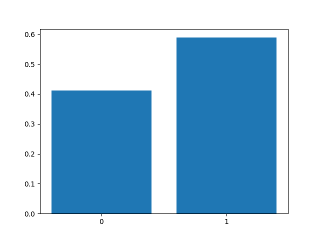
図2.2:
複数量子ビット
1量子ビットの場合は2つ状態(\( \ket{0} \)や\( \ket{1} \))とそれぞれの状態に対する2つの確率複素振幅(\( \alpha \)や\( \beta \))を用いて重ね合わせの状態を表すことができます。複数量子ビット場合も同じで\( n \)ビットの量子ビットの場合、\( 2^n \)個*2 の状態とそれぞれの状態に対する\( 2^n \)個の確率複素振幅を用いて\( 2^n \)個の重ね合わせの状態を表すことができます。1量子ビットの時と同じように数式で表すと下のようになります。例えば3ビットの量子ビットの場合は上で説明したような式になります。
実際にPythonで組んでみると、下のようになります。
2.7 量子ゲート
量子ゲートとは量子ビットの働く演算のことです。ただ、量子ビットに対する演算は普通のビット(古典ビット）に対する演算とは異なり、量子ビットの状態をコピーするなどの元に戻すことができない演算は不可能であり、回転や折り返しなどの行列の積で表される演算のみが可能となります。そのため、量子ゲートによる演算も行列の積で書くことができます。
Xゲート(ビットフリップゲート)
X ゲート (ビットフリップゲート) は入力された1量子ビットの \( \ket{0} \) , \( \ket{1} \) の確率振幅と位相(\( \alpha \), \( \beta \))を反転させる操作をするゲートで式2.1のように表されます。
また、Xゲートによる操作を「ビットフリップ」と呼びます。
1量子ビット\( \psi = \alpha\ket{0} + \beta\ket{1} \)に対しての操作は式2.2のように表され、\( \ket{0} \)と\( \ket{1} \)の位相と確率振幅が入れ替わっているのがわかります。
式2.1:
式2.2:
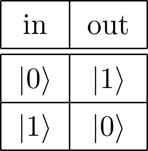
図2.3:
Zゲート (位相フリップゲート)
Zゲート(位相フリップゲート)は入力された1量子ビットの\( \ket{1} \)の位相を反転させる操作を行うゲートで式2.3のように表されます。
また、Zゲートによる操作を「位相フリップ」と呼びます。
1量子ビット\( \psi = \alpha\ket{0} + \beta\ket{1} \)に対しての操作は式2.4のように表され、\( \ket{1} \)の位相が反転しているのがわかります。
式2.3:
式2.4:
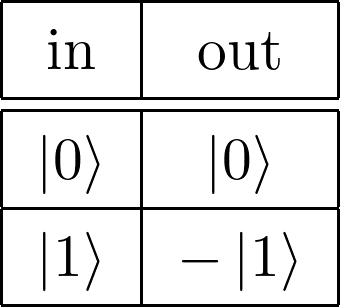
図2.4:
Hゲート (アダマールゲート)
Hゲート(アダマールゲート)は主に重ね合わせの状態を作るときに使われるゲートで式2.5のように表されます。
1量子ビット\( \ket{0} \)に対しての操作は式2.6のように表され、\( \ket{0} \)と\( \ket{1} \)の均等な重ね合わせ状態ができていることがわかります。
式2.5:
式2.6:
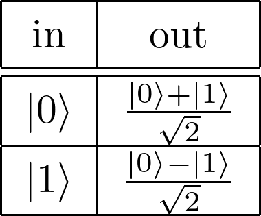
図2.5:
CNOTゲート
XゲートやZゲート、Hゲートなどは1量子ビットに対して作用しましたが、CNOTゲートは2量子ビットに対して作用します。
入力する量子ビットのうち片方を制御(Control)ビット、もう片方を標的(Target)ビットと呼びます。CNOTゲートは、制御ビットに\( \ket{0} \)が入力されたら標的ビットには何もせず、制御ビットに\( \ket{1} \)が、標的ビットにXゲートを作用させるというような働きをします。
1ビット目を制御ビットにするか、2ビット目を制御ビットにするかで式2.10と式2.8の2通りの表し方があります。制御ビットの状態に応じて標的ビットの作用が変わるのが特徴で、制御ビットが標的ビットを反転させるかどうかのスイッチのような役割を果たします。
例えば、1ビット目を制御ビット、2ビット目を標的ビットとみなす2量子ビット\( \ket{10} \)に対する操作は式2.9のように表され、制御ビットは変わらず、標的ビットのみ反転していることがわかります。
式2.10:
式2.8:
式2.9:
その他ゲート
他にもゲートの種類はありますが、全ては説明しきれないので、真理値表*4とそのゲートの行列での表し方をいくつか紹介するだけにします。
Yゲート
式2.10:
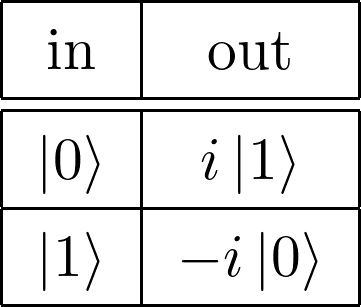
図2.6:
Sゲート
式2.10:
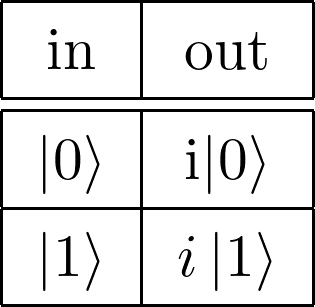
図2.7:
Tゲート
式2.10:
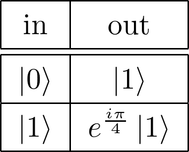
図2.8:
CZゲート
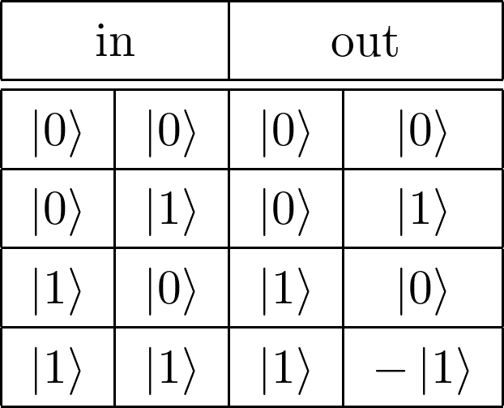
図2.9:
Toffoliゲート

図2.10:
SWAPゲート
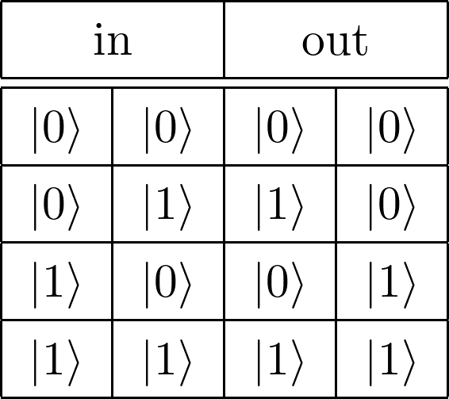
図2.11:
CSゲート
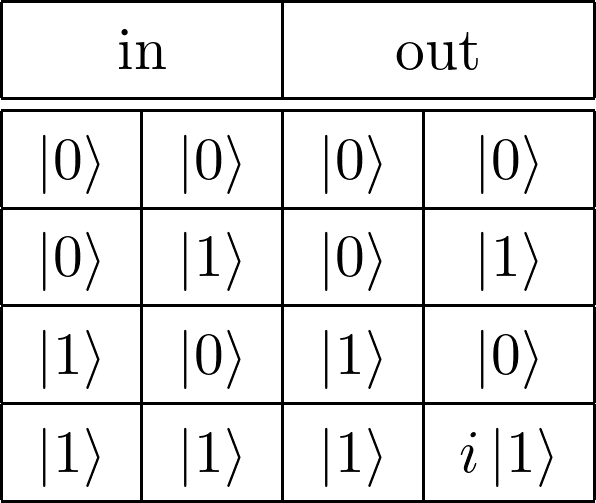
図2.12:
Fredkinゲート
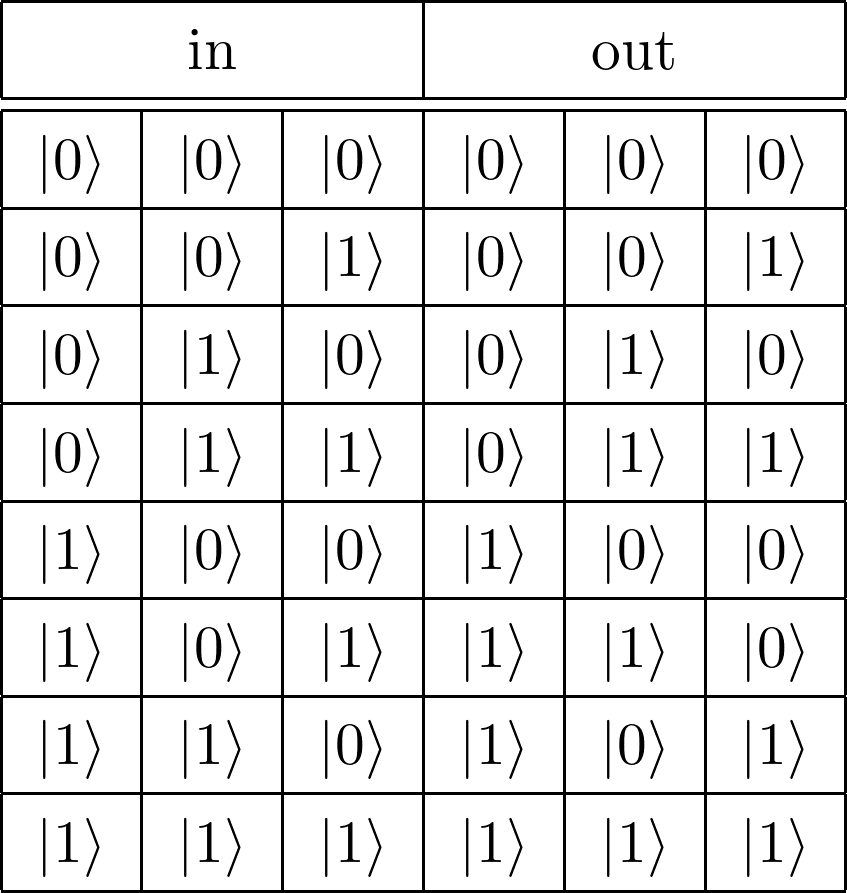
図2.13:
2.8 最後に
かなり数学寄りの記事になってしまいましたが、最後まで読んでいただきありがとうございます。結局量子コンピューターがどのような働きをするのか、どう扱えば良いのかは分からずじまいだったかもしれませんが、これを機会に量子コンピューターやプログラミング、数学にも興味を持つ方が一人でも現れると嬉しいです。
2.9 参考文献
- 「（1）量子ってなあに？：文部科学省」
(https://www.mext.go.jp/a_menu/shinkou/ryoushi/detail/1316005.htm) - 「オブジェクト・オリエンテッド・プログラミング・ランゲージ (Object-Oriented Programming Language)とは｜「分かりそう」で「分からない」でも「分かった」気になれるIT用語辞典」(https://wa3.i-3-i.info/word19329.html)
[*1] （1）量子ってなあに？：文部科学省 : https://www.mext.go.jp/a_menu/shinkou/ryoushi/detail/1316005.htm
[*2] 例えば、3ビットで表される数値では2進法で000(=0)から111(=7)までの\( 2^3 \)=8個の状態を表すことができる
[*3] 字の通りでランダムな数を表す。ただ、コンピュータ上で「本当にランダムな数」を表現することは難しいので、疑似乱数と呼ばれるある程度ランダムに近い規則を持ったアルゴリズムのよって生成される
[*4] 入力とそれに対する出力を一対一に対応させた表